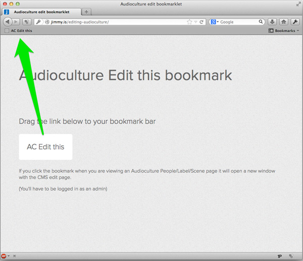
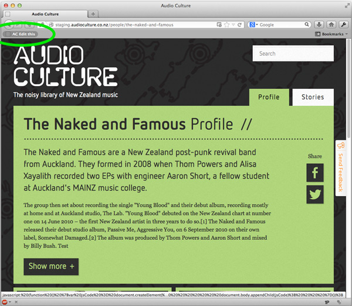
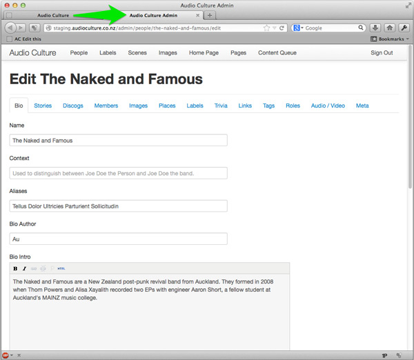

Audioculture 'Edit this' bookmarklet
Drag the button below to your bookmark bar
AC Edit this

When you are on a People/Label/Scene page and click the bookmark…

… it will open a new window to edit it in the CMS.

Notes:
- You might have to allow popups for the site the first time you use it.
- It knows the difference between staging. and www.